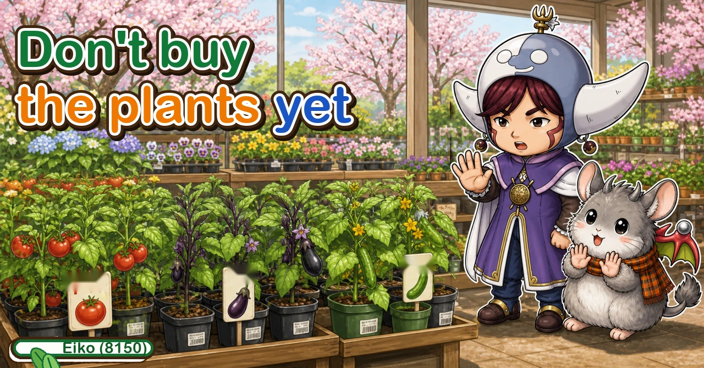
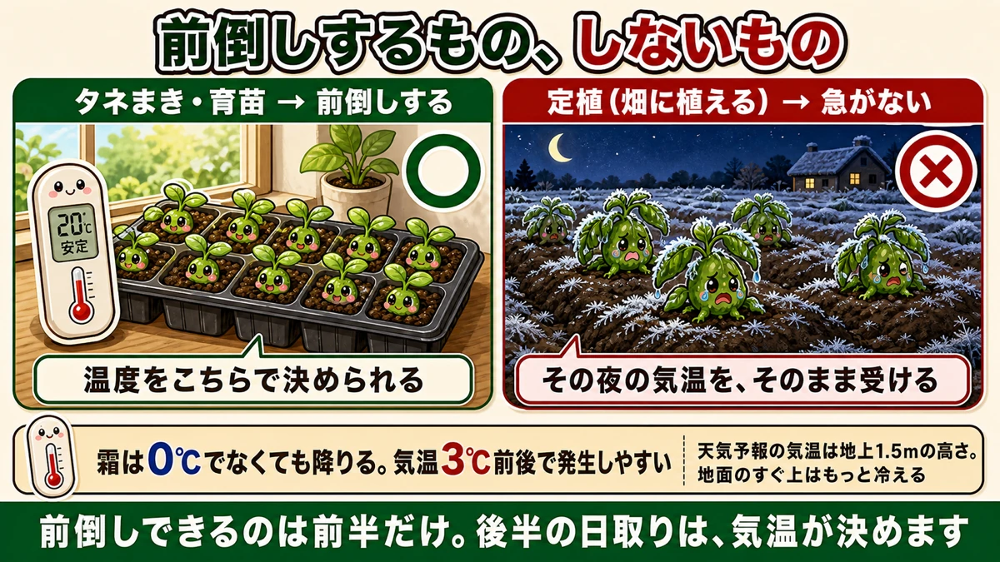
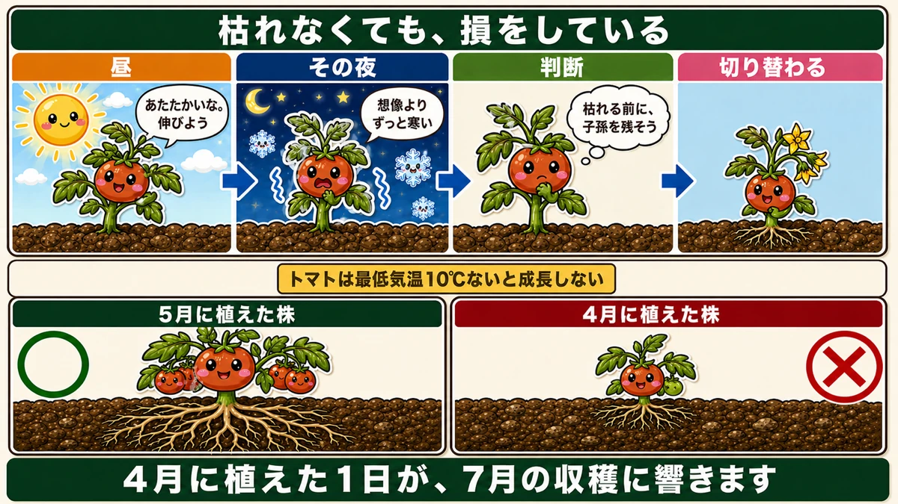
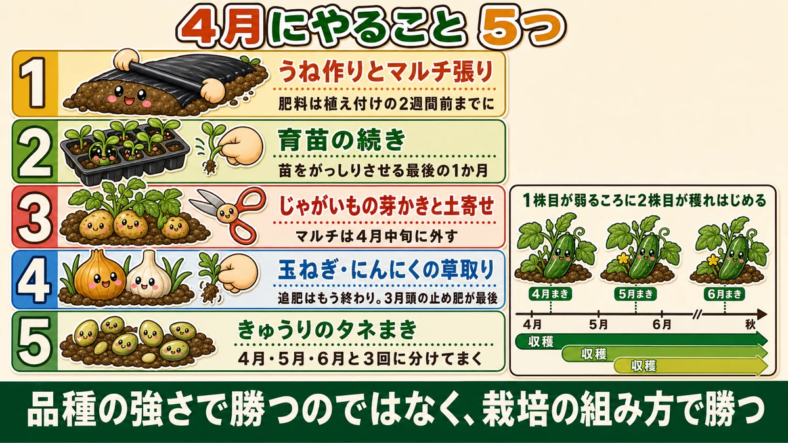

Don't buy the summer plants yet 🌱 What to do in April

🗨️ "It's warm now — time for the summer crops."
🗨️ "The shop has plants in, so it must be the right time."
🗨️ "Last year mine died right after planting."
Hello, I'm Eiko. Eight years of growing vegetables organically and without pesticides, and a teaching licence in science.
The monthly instalment — April. And this month I'm going to contradict last month.
The point, up front:
Don't buy summer plants in April.
Last month I said summer crops have moved earlier, and that's true of the sowing. Planting out must not be rushed ☺️
What moves earlier, and what doesn't

What this diagram says （図解の文字）
- What to bring forward, and what not to
- ○ Sowing and raising plants → bring forward. About 20 °C, stable — you decide the temperature
- × Planting out → don't rush. You take that night's temperature exactly as it comes
It sounds contradictory. It isn't:
- Sowing and raising plants — indoors or in a small frame. You control the temperature, and you can bring them in when it turns cold
- Planting out — outdoors, exposed to late frost and cold nights, and once planted it can't be moved
The difference is whether you get to decide the temperature.
So the sequence is: sow in late winter indoors → grow on through early spring → plant out in late spring. Only the first half can be brought forward. The second half is decided by the weather.
① Planted in April, they die
The commonest April failure is late frost — and there's a number worth knowing:
Frost forms readily at an air temperature of about 3 °C.
Most people assume frost means below zero. It doesn't. A forecast minimum of 3 °C can still put frost on your beds.
The reason: forecast temperatures are measured about 1.5 m above the ground, and the air immediately above the soil is colder than that. On a clear, still night the ground radiates its heat to the sky — so the garden is colder than the forecast.
② The worse outcome is the one that lives

What this diagram says （図解の文字）
- Even without dying, you've lost something
- Day — "warm. Let's grow" ／ that night — "far colder than I expected"
- Decision — "better reproduce before I die" → it switches over
- Tomatoes don't grow unless the minimum is at least 10 °C
A plant that dies tells you it died. You replant.
The expensive case is the plant that survives with a shallow root system — because it looks normal and you never find out.
Plants watch the minimum, not the maximum
A tomato doesn't grow unless the night minimum is at least about 10 °C. Aubergines and peppers are similar. 25 °C by day and 8 °C at night means a tomato isn't moving.
And in April, most places are still below 10 °C at night.
What the plant concludes
Put yourself in a tomato planted on an April morning:
- Day — "warm. Time to grow."
- That night — "this is much colder than I expected. I may have the season wrong."
- Decision — "I might die. Better reproduce first."
And it starts setting flower buds.
Flowering stops the roots
Plants have two modes:
- Vegetative growth — building roots, stems and leaves
- Reproductive growth — flowering, fruiting, setting seed
A plant that decides it's in danger switches from the first to the second — and root extension stops. It starts reproducing before it has built a body.
A shallow-rooted plant can take up less water and less nutrition, so when midsummer arrives and it should be cropping hard, it hasn't got the capacity. The yield is lower.
One day in April shows up in July. That's the invisible failure.
So why are they in the shops?
A fair question, with a simple answer: there's demand from people who can plant early.
- growers who can manage temperature under a tunnel
- anyone with a greenhouse
- experienced growers repeating something that worked
For them, April plants are needed, and selling them is entirely reasonable.
The risk is a beginner reading availability as timing — "it's for sale, so it must be the moment." That is an extremely natural reading, and it's exactly what I thought in my first year. Then the plant dies, and someone concludes that growing vegetables is too hard and stops. That's the real loss.
If you must plant in April
- Cloches — a clear cover over an individual plant
- A film tunnel — essential if you're planting this month
- A fertiliser sack with the bottom cut out, put over the plant — a field improvisation that works
If a tunnel is more than your space warrants, cloches are the answer.
With those, mid-April is the earliest sensible line. And if you'd rather not do any of it, wait for late spring and plant then.
Five things to do in April

What this diagram says （図解の文字）
- Five things to do in April
- 1 Make the beds and lay mulch — fertiliser in at least two weeks before planting
- 2 Keep growing the plants on — the last month to make them sturdy
- 3 Potatoes: remove surplus shoots and earth up — mulch off in mid April
- 4 Onions…
- Make the beds and lay the mulch — fertiliser must go in at least two weeks before planting
- Grow the plants on — this is the last month in which to make them sturdy
- Potatoes: thin the shoots and earth up, and take the mulch off in mid April
- Onions: the final feed is behind you — now it's weeding, and they're shallow-rooted, so pull by hand
- Watch for the first aphids and cutworms
April is a month of preparation
Nothing here is glamorous — beds, mulch, plants grown on, weeds pulled.
And that's the point. May's planting goes well or badly depending on what was done in April, and the one thing you shouldn't do is bring the planting itself forward ☺️
To sum up
- ✅ Bring sowing forward; don't bring planting out forward
- ✅ The difference is whether you control the temperature
- ✅ Frost forms at around 3 °C air temperature
- ✅ Forecasts are measured 1.5 m up; the ground is colder
- ✅ Even fleece plus a tunnel isn't a guarantee
- ✅ The plant that survives with shallow roots is the expensive failure
- ✅ Tomatoes need night minimums of about 10 °C
- ✅ Chilled, a plant switches to flowering and stops rooting
- ✅ One April day shows up in July's harvest
- ✅ Shops stock early plants for people who can manage them
- ✅ Must plant now? Cloches or a tunnel, and mid April at the earliest
- ✅ April's jobs: beds and mulch / grow the plants on / potatoes / weeding / first pests
You don't have to do all of it. This month, make the beds and leave them. Buy the plants next month 🌱
Thank you for reading!